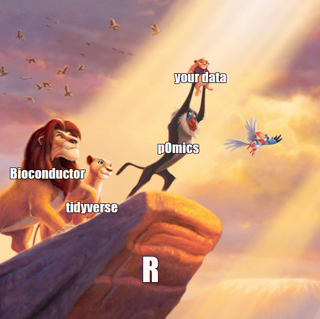

pOmics: Tidy Proteomics Data Analysis in R
Preface
This is my attempt to make proteomics data analysis in R accessible to other scientists. Took me a while to learn it, so why not share it.
Main features:
- data structure for simple loading and handling of data
- statistical analysis for proteomics data
- functional enrichment via clusterProfiler
- tidyverse friendly
- ggplot2, for publication-quality figures
- plotly, for interactive data exploration
- R Markdown, for efficient communication
